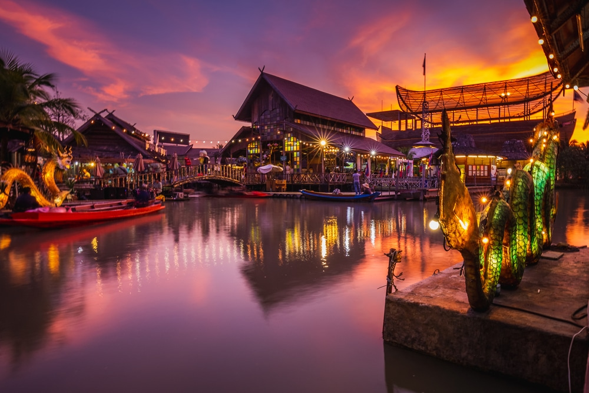
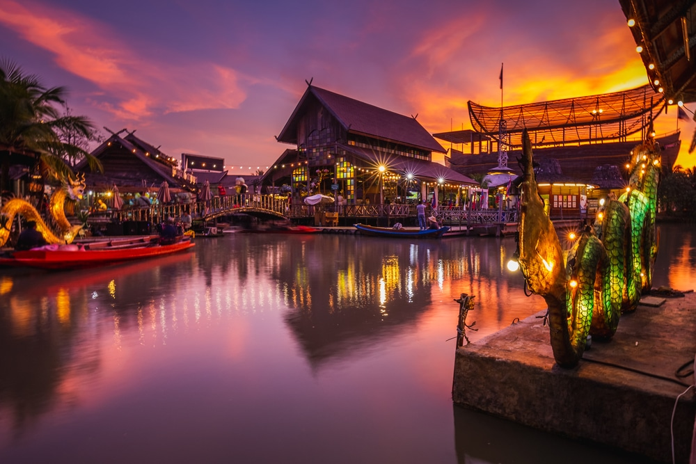
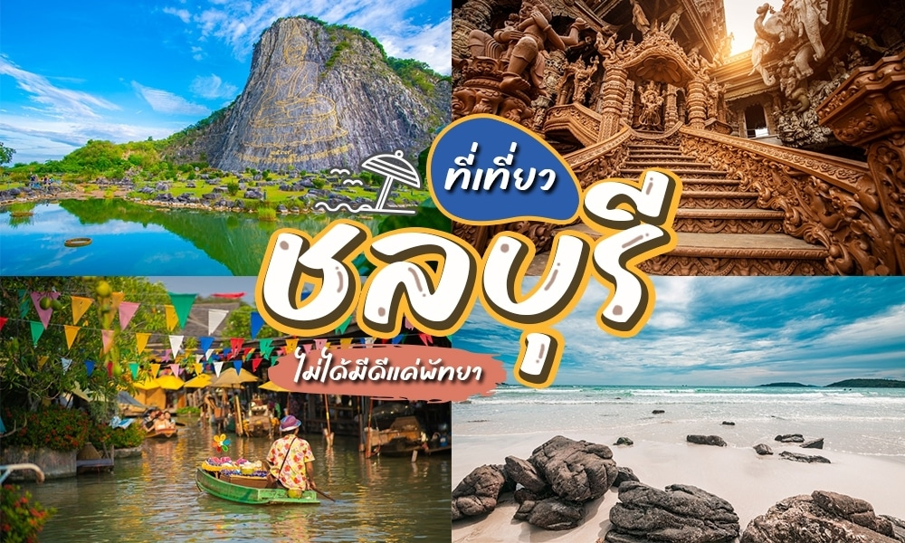

ยินดีต้อนรับสู่เว็บไซต์แนะนำสถานที่ท่องเที่ยวในจังหวัดชลบุรี ที่จะพาคุณไปค้นพบเสน่ห์ของจังหวัดที่เต็มไปด้วยความหลากหลาย ตั้งแต่ชายหาดที่งดงาม สถานที่ท่องเที่ยวเชิงธรรมชาติ ไปจนถึงแหล่งวัฒนธรรมที่มีประวัติศาสตร์ยาวนาน ไม่ว่าคุณจะเป็นนักท่องเที่ยวที่มองหาความสงบ หรือผู้ที่ต้องการสนุกสนานกับกิจกรรมต่างๆ ที่นี่ก็มีทุกอย่างที่คุณต้องการ สำหรับการเดินทางที่น่าจดจำในชลบุรี